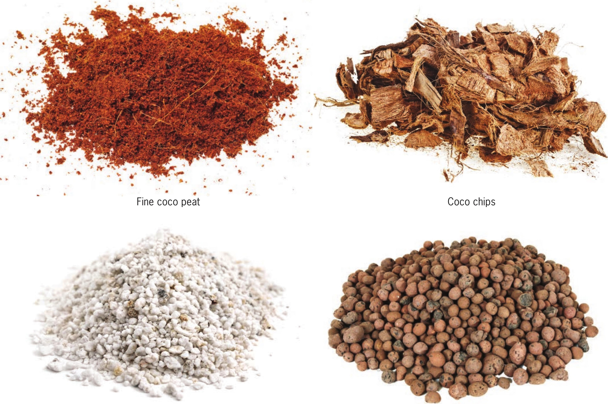

• •* Perlite Expanded clay pellets Coco Peat A very fine coco, sometimes called coco pith or coco dust, coco peat can hold a lot of water. It is often used as a substitute for or mixed with peat moss. Coco peat, unlike peat moss, has a starting pH that is acceptable to most vegetables without needing to add lime. Coco peat, like peat moss, is often mixed with perlite or another porous substrate to lighten the mix and improve drainage. Coco Chips A chunky coco, sometimes called coco croutons, coco chips have a good balance of water retention and drainage. They can be used as a standalone substrate or incorporated into a mix. When used as a standalone substrate, coco chips may need to be irrigated frequently, similar to growing in expanded clay pellets. Perlite Perlite is made by heating volcanic rock until it pops like popcorn. This expanded rock is very lightweight and has many commercial applications, primarily in construction. Perlite is used in horticulture because it is cheap, organic, lightweight, and great for aerating heavy substrates like coco and peat. It comes in many sizes, from very fine to chunky, and can be used as a standalone hydroponic substrate. 26 DIY HYDROPONIC GARDENS
